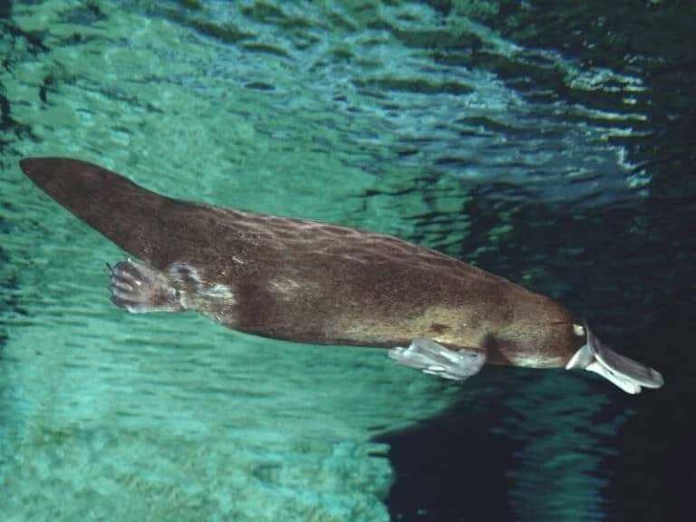
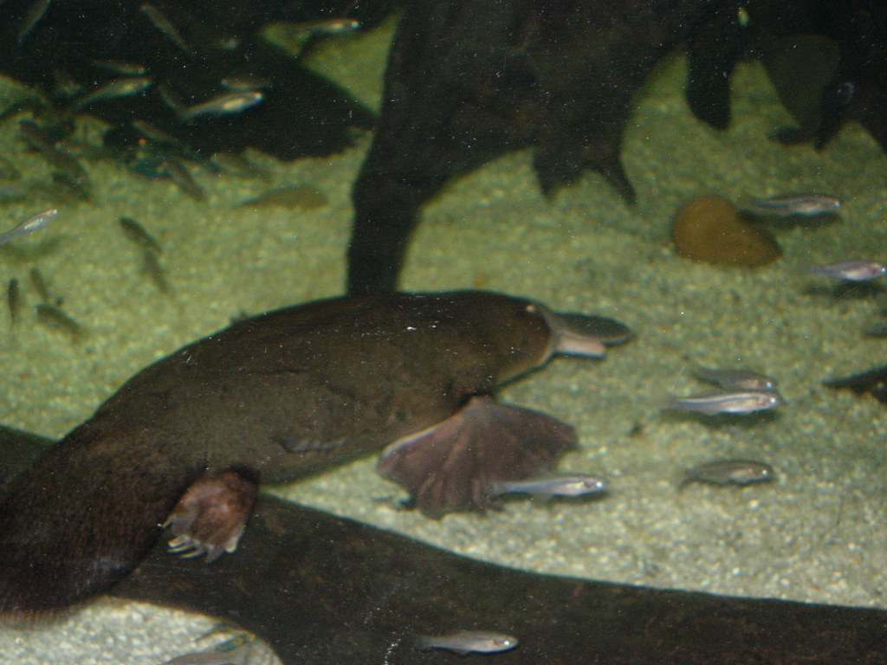
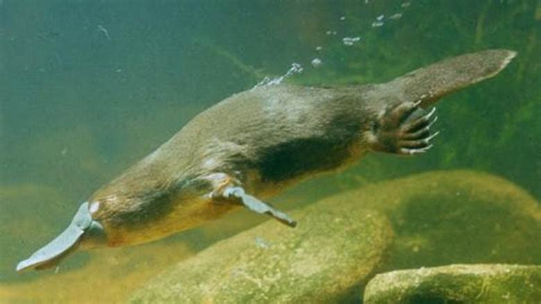
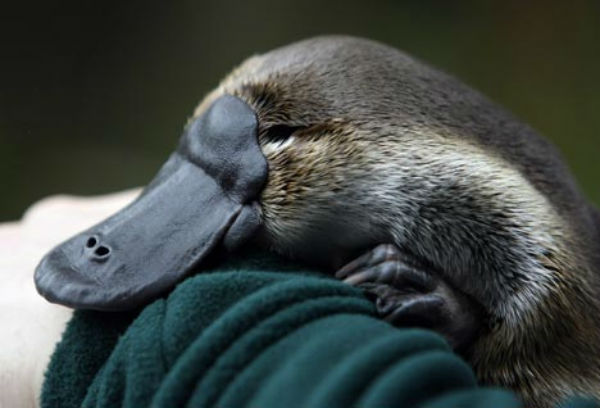
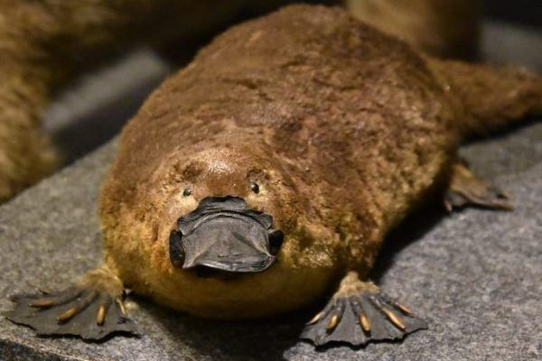

Vida del Ornitorrinco
El ornitorrinco (Ornithorhynchus anatinus) es un mamífero semiacuático nativo del este de Australia y Tasmania, reconocido como uno de los animales más extraños del mundo. Su cuerpo combina rasgos de diversas especies: tiene pico y patas de pato, cola de castor y cuerpo de nutria. Es uno de los pocos mamíferos que pone huevos. Vive en hábitats de agua dulce como ríos, arroyos y lagunas, donde excava complejas madrigueras en las orillas para protegerse y descansar. Su rutina diaria es mayormente nocturna, y pasa muchas horas nadando y buscando alimento.
Dieta
La alimentación del ornitorrinco es principalmente carnívora y está compuesta por invertebrados acuáticos como larvas de insectos, gusanos, camarones de agua dulce y pequeños moluscos. Este animal utiliza su pico, dotado de sensores electroreceptores, para localizar a sus presas bajo el agua, ya que cierra los ojos, oídos y fosas nasales al sumergirse. Tiene una técnica de alimentación única: recolecta el alimento con el pico y lo guarda en unas bolsas ubicadas en las mejillas, donde lo tritura con placas córneas, ya que no tiene dientes verdaderos.
Depredadores
A pesar de su aspecto singular, el ornitorrinco tiene varios enemigos naturales. Entre ellos se encuentran aves rapaces como el águila audaz, serpientes grandes y cocodrilos de agua dulce. También es vulnerable a zorros, perros salvajes y gatos ferales introducidos por el ser humano. Sin embargo, su principal amenaza hoy en día es la actividad humana: la pérdida y fragmentación del hábitat, la contaminación de los cursos de agua y el cambio climático han afectado gravemente sus poblaciones. En algunas zonas, se han implementado esfuerzos de conservación para protegerlo.
Habilidades
El ornitorrinco es un nadador muy ágil que se impulsa usando sus patas delanteras palmeadas, mientras que las traseras y su cola actúan como timón. Una de sus habilidades más impresionantes es la electrorecepción: su pico puede detectar los impulsos eléctricos generados por los movimientos musculares de sus presas. Esta capacidad, común en peces pero rarísima en mamíferos, le permite cazar con precisión en condiciones de visibilidad nula. Además, el macho tiene un espolón venenoso en las patas traseras que puede causar un dolor intenso en humanos, lo que lo convierte en uno de los pocos mamíferos venenosos.
Esperanza de vida
En libertad, la esperanza de vida de un ornitorrinco suele oscilar entre los 10 y 12 años, aunque algunos ejemplares pueden vivir más tiempo si las condiciones ambientales son óptimas. En cautiverio, bajo cuidados adecuados, se han registrado casos de ornitorrincos que vivieron hasta 17 años. Su longevidad está directamente relacionada con la calidad de su hábitat: la contaminación del agua, la escasez de alimento y las alteraciones en el ecosistema pueden afectar drásticamente su salud y supervivencia.
El amor del Ornitorrinco
El comportamiento reproductivo del ornitorrinco es solitario y estacional. Durante la temporada de apareamiento, que ocurre entre junio y octubre, el macho busca activamente a la hembra. Tras el apareamiento, la hembra cava una madriguera especial con cámaras interiores donde pone de uno a tres huevos. A diferencia de la mayoría de los mamíferos, el ornitorrinco no tiene pezones; la leche se secreta a través de poros en la piel del abdomen y las crías la lamen directamente. Las crías nacen ciegas, sin pelo y completamente dependientes del cuidado materno durante los primeros meses de vida.
